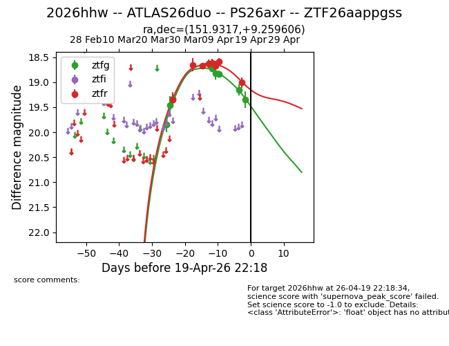
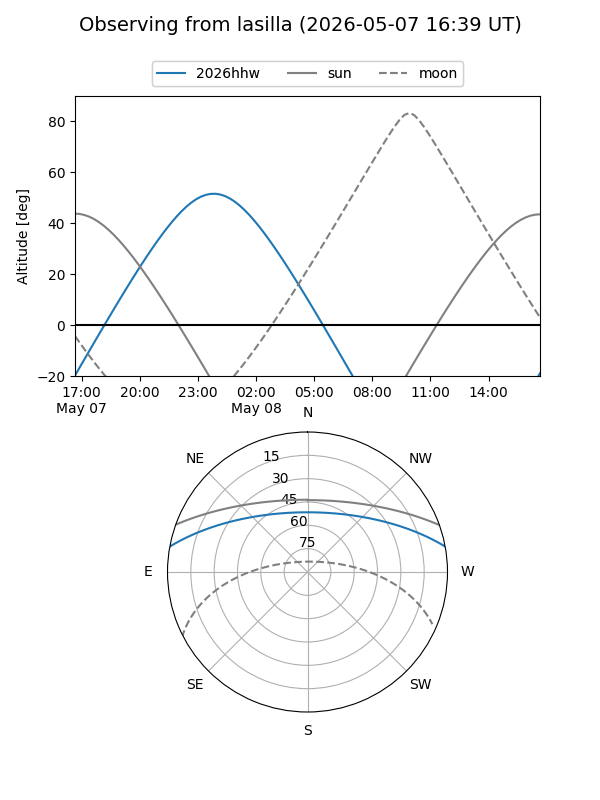
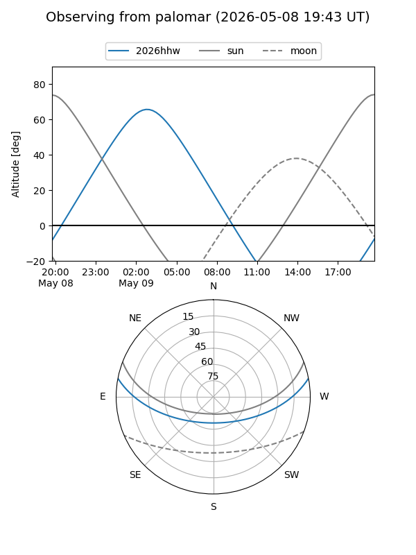
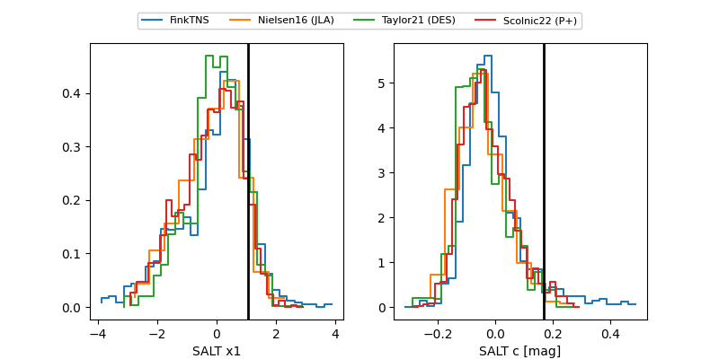

2026hhw
Target 2026hhw at 2026-04-19 22:28
Aliases and brokers:
FINK: link
Lasair: link
ALeRCE: link
TNS: link
YSE: link
alt names
ZTF26aappgss (ztf,fink_ztf)
2026hhw (tns,yse)
ATLAS26duo (atlas)
PS26axr (panstarrs)
Coordinates:
equatorial (ra, dec) = 151.9317,+9.25961
equatorial (HMS+DMS) = 10:07:43.61,+09:15:34.58
galactic (l, b) = (229.8622,+47.47882)
Flags:
Photometry:
last ztfg=19.35, ztfr=19.01
8 ztfg, 8 ztfr detections
Lightcurve

Visibility


Additional plots
